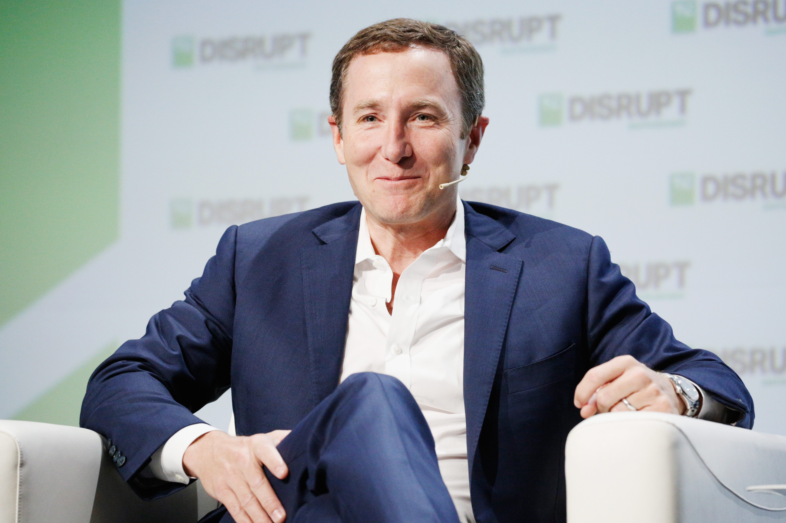

Peloton tries to pedal its way back to the top and appoints new CEO
By Diana Escamilla Fuentes
Peloton is betting that a new CEO with a background in software will be able to restore the flailing exercise brand to its pandemic-era greatness.
After almost five months since the departure of their last CEO, Barry McCarthy, on Thursday, the fitness brand appointed Peter Stern, an expert in technology and subscription-based businesses, as their new CEO effective January 1, 2025. Shares jumped 28% on the news.
“Overall, we believe he is an apt pick in Peloton’s current strategy of expanding its fitness subscription businesses,” Dana Telsey, CEO and chief research officer of the Telsey Advisory Group wrote in a November 1, 2024 research note.
Peloton’s hardware sales and app subscriptions plummeted after pandemic lockdowns eased and people started going back to their pre-covid lives, including gyms and studios, as the need to workout at home faded. At the same time, a series of shipment delays, product recalls, the death of a famous tv character and competition from cheaper manufacturers of exercise equipment picked up as consumers became more picky amid an uncertain economic backdrop. The company also shifted its focus to subscriptions just as it became harder to grab new customers, hitting revenues.
The appointment of a permanent CEO offers clarity and puts forward Peloton’s goal of restructuring their app software by adding features such as personalized plans that could drive subscriber growth.
Stern is no stranger to the fitness industry and subscription-based businesses. As co-founder of Apple Fitness+, he substantially contributed to its growth of members.
“Peter is a seasoned leader and strategist with over 20 years of experience operating at the intersection of hardware, software, services and content at Ford, Apple and Time Warner Cable,” said Peloton’s interim co-CEO Karen Boone during an earnings call on Thursday morning.
However, Stern, the fifth CEO in six years, will inherit a company in financial distress.
According to Paul Golding, senior US payments and digital commerce analyst at Macquarie, subscriber and revenue overall are the baseline drivers of Peloton and they’re not meeting expectations.
By the end of their 2024 fiscal year, Peloton reported a net loss of $551.9 M, revenue came in at $2.70 billion and the company reported a loss of $1.51 per share and earnings per share were -1.51. For their 2025 fiscal year, Peloton lowered their previous guidance of paid connected fitness subscription declines by 20,000 subscribers.
“Those drivers, the levels that they are expecting continue to decline,” said Golding. “So while the profitability and cash flow metrics, seemingly based on their forecasts, are improving, the baseline drivers are not. Continued subscriber decline is expected and continued revenue decline is expected in their forecast that they are sharing with the Street.”
A decline in subscribers is alarming as it became Peloton’s focus after a substantial decline in their hardware sales.
Barry McCarthy “was trying to make it more of a subscription business versus just an equipment business. That proved challenging because it’s very competitive,” said Sanmet Deo, senior investment analyst at The Motley Fool.
While gym equipment is a one-time purchase, Peloton looked to keep those who’d bought equipment active members by offering unique, fresh content on their app platforms. Members could either choose a free slimmed down version of the app, a $12.99 monthly fee, or pay $24 per month for full access.
The idea was to drive revenue from the loyal customers the company amassed during their pandemic peak. Aime Thacker, a retired science middle school teacher and fitness enthusiast, is one of them. Thacker bought a Peloton bike three years ago and has remained a loyal consumer ever since, paying her monthly subscription dues and adding to her exercise equipment collection.
“We have had several stationary bikes, rowers and treadmills and the quality compared to Peloton was like comparing a Ford Fiesta to a Mercedes-Benz,” said Thacker, a South Carolina resident. “They’re quiet, they make absolutely no noise whatsoever and I like having access to the app for the classes, they’re very motivating.”
Thacker and her husband like the convenience of having exercise equipment at home and are planning on acquiring the treadmill soon.
Pamela Rutledge, professor Emerita of Media Psychology at Fielding Graduate University studied the dynamic Peloton had with its consumers and why it was so successful.
She attributed this connection to the parasocial relationships the instructors built with members. Members were often rewarded for their achievements and commitment and they got to enjoy an uplifting fitness community without leaving the comfort of their homes.
But as the pandemic subsided and competition grew, it wasn’t enough to keep the business profitable. Churn rates, which measure how many customers leave a business in a set period, have increased as members leave the company -- as of June 30, 2024 Peloton reported 6.4 million members, down from the 6.5 million members at the same time in 2023.
The company doesn’t see things picking up immediately, even with a new CEO at the helm. In its latest earnings report, Peloton said it expects a weak holiday season, usually their most profitable quarter.
The fitness brand is expecting revenue to come in between $640 million and $660 million, down from $744 million from last year’s second quarter.
For now, Peloton is leaning on partnerships with other well-established brands, such as their most recent partnership with Costco, to keep the company afloat. While shares are still far from their pandemic peak, the partnership with Costco boosted the stock, which is up 40% so far this year.
Peloton's Chief Executive Officers
John Foley
June 2012 - February 2022

Barry McCarthy
February 2022 - May 2024
Chris Bruzzo
May 2024 - October 2024
Interim co-CEO along Karen Boone
Karen Boone
May 2024 - December 2024
Interim co-CEO along Chris Bruzzo